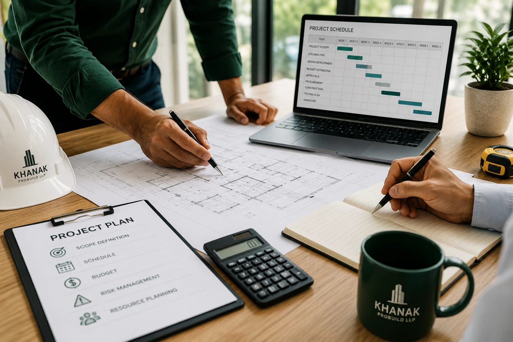
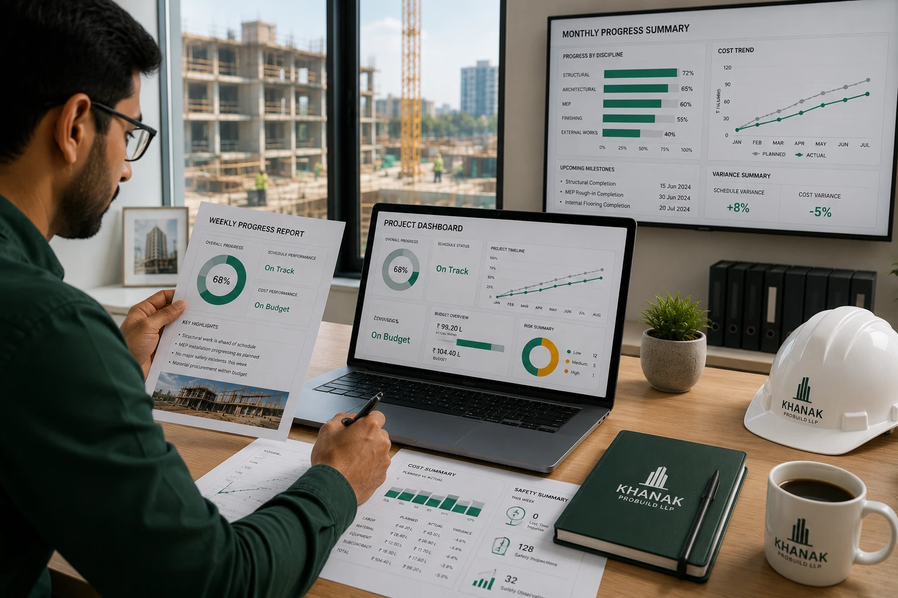
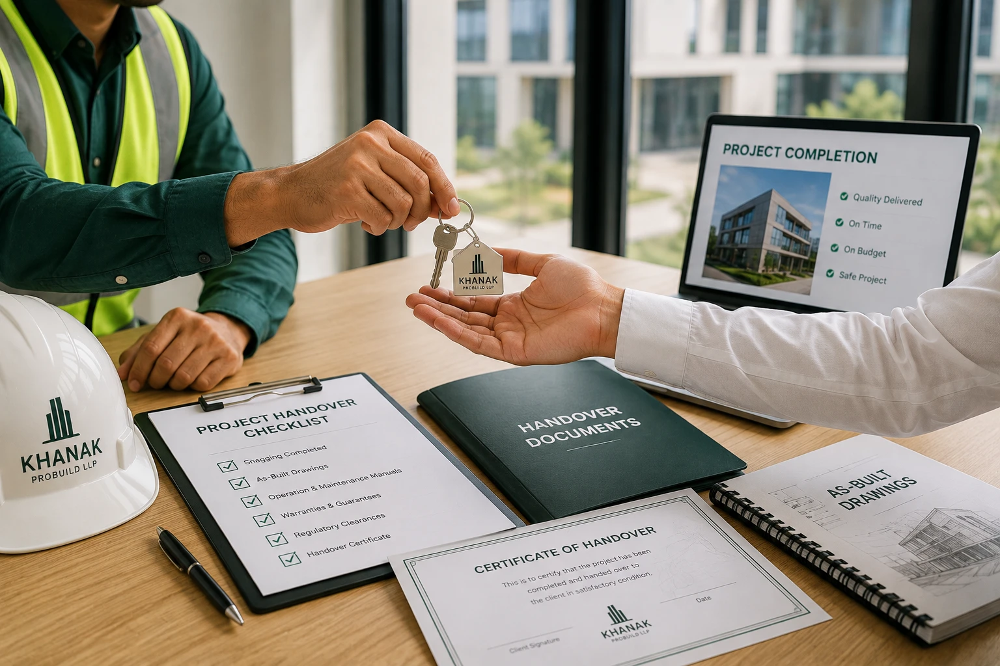

01
Planning
Detailed scope definition, master scheduling, BOQ, budget baseline, and risk identification.
Strategic project oversight from day one to handover: planning, monitoring, reporting, and delivery.
We step in at any stage of your project to provide strategic support that improves execution, controls cost, and ensures the best possible value throughout the entire process. Our team brings structured methodology to every project, not just oversight, but active problem-solving.
Whether you need a project manager from day one or someone to fix a project that has gone off track, we provide the clarity and control that gets results. We work across residential, commercial, and industrial projects of all scales.
Every engagement includes a dedicated point of contact, weekly progress reports, and a clear escalation path so you always know where your project stands.


Comprehensive PMC across all nine pillars of project delivery. Nothing left unmanaged.
Detailed project planning covering scope, deliverables, milestones, and resource requirements.
Master programme development with critical path analysis and milestone tracking.
BOQ preparation, cost baseline setting, and ongoing variance management throughout the project.
Real-time tracking of actual spend against budget with regular financial reporting.
Contractor selection, tender evaluation, contract negotiation, and performance monitoring.
Dedicated on-ground oversight ensuring work is executed as per approved drawings and specs.
Stage-wise quality inspections at foundation, structure, MEP, and finishing to maintain standards.
Implementation of site safety protocols, compliance monitoring, and incident prevention.
Proactive identification, assessment, and mitigation of project risks before they become issues.
Four clear stages from the first conversation to the final key handover.

Detailed scope definition, master scheduling, BOQ, budget baseline, and risk identification.
Real-time tracking of progress, cost, quality, and safety against the approved plan.

Weekly progress reports, monthly financial summaries, and immediate variance alerts.

Snagging, as-built documentation, and a clean formal handover to the client.
Structured methodology, dedicated accountability, and transparent communication at every stage.
One dedicated PMC team responsible for the entire project. No finger-pointing between contractors.
Every rupee tracked and reported. Cost variances are flagged before they become problems.
Rigorous scheduling and daily tracking keep your project on programme from day one.
Structured PMC processes aligned to industry best practices, delivering consistent results across every project type.
Let's talk about where your project stands and what our consultancy can do for it.